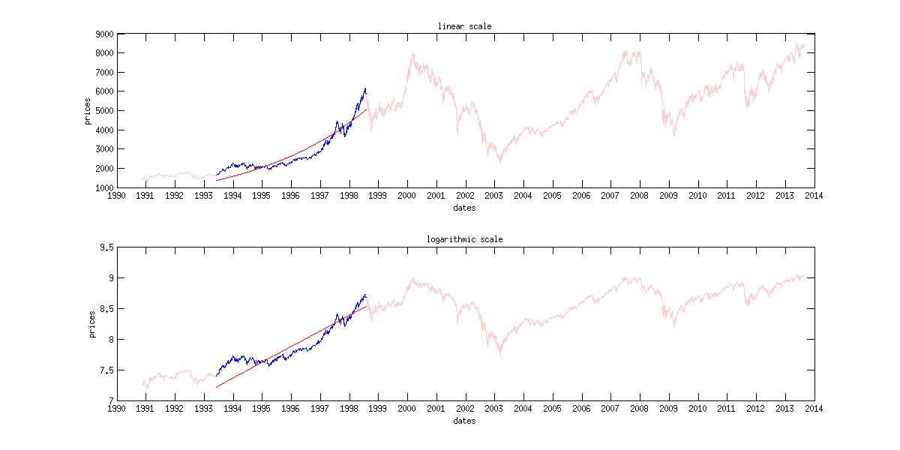
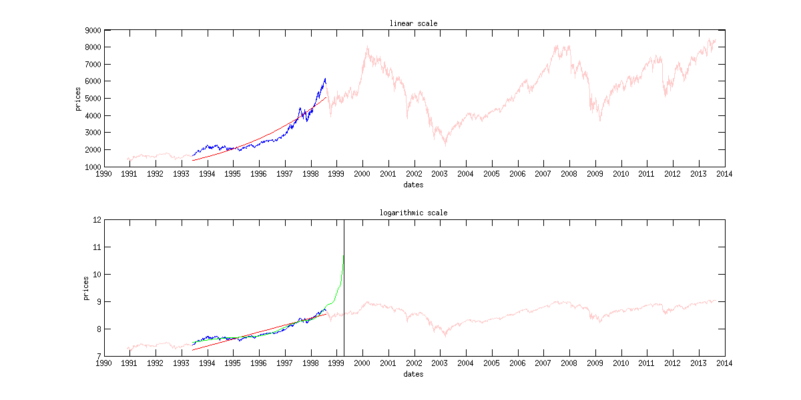

Working with financial data: regression analysis and curve fitting
Christian Groll
Seminar f�r Finanz�konometrie, Ludwig-Maximilians-Universit�t M�nchen.
All rights reserved.
Contents
This is the second part of the MATLAB course. Here we will show how to download real data and how this data can be further processed.
Then, as first application, we will examine whether some theoretical relationships between risk and return can be found in german stock data. This analysis will be based on regression models.
Subsequently, we will try to find deterministic trends in stock market data based on curve fitting approaches. Only the next script will show common approaches to modelling of stock market returns as stochastic variables.
Required functions
hist_stock_data processData LPPL LPPLfit constrFunc LPPLinteractively
Load historic DAX prices
The following code provides an example of the usage of the function hist_stock_data, which is able to download historic stock prices and trading volumes based on the data provided by Yahoo!finance. In order to make the data comply with our requirements, some additional treatments are needed first.
% specify ticker symbol as string variable tickSym = '^GDAXI'; % specify stock data of interest % specify beginning and ending as string variables dateBeg = '01011990'; % day, month, year: ddmmyyyy dateEnd = '01072013';
Alternatively, dates also can be determined dynamically, with regard to today. Since the MATLAB command "today" measures time on a numeric scale, the value displayed is a number.
% display date of today fprintf(['\nToday is ' num2str(today) '.\n']) % Note: fprintf is able to display a string to the command % window, without having to assign it to a variable or MATLAB's % temporary placeholder "ans" (short for "answer") first. In % order to get the input string, in this case we first have to % concatenate smaller strings into one large string.
Today is 735471.
In order to make the numeric data value more meaningful, we can transform it with the function datestr() into a date expression. As a string, this can be directly assigned to the variable declaring the end of the data period requested.
% dynamic assignment to end of period dateEnd = datestr(today, 'ddmmyyyy') % today as last date
dateEnd = 25082013
However, instead of using "today", you also can use the command "date", which returns the date as string right away.
fprintf(['\nToday is ' date '.\n'])
Today is 25-Aug-2013.
In order to download data from Yahoo!finance, we make use of the function hist_stock_data. This function can be found at the MATLAB File Exchange at http://www.mathworks.com/matlabcentral/fileexchange/. The File Exchange is a place where users can find and share content related to MATLAB development.
% load data
daxCrude = hist_stock_data(dateBeg, dateEnd, tickSym);
The function hist_stock_data returns a structure variable. A more detailed insight into the formatting of the output can be achieved with queries.
daxCrude exampleDateEntries = daxCrude.Date(1:4)
daxCrude =
Ticker: '^GDAXI'
Date: {5761x1 cell}
Open: [5761x1 double]
High: [5761x1 double]
Low: [5761x1 double]
Close: [5761x1 double]
Volume: [5761x1 double]
AdjClose: [5761x1 double]
exampleDateEntries =
'2013-08-23'
'2013-08-22'
'2013-08-21'
'2013-08-20'
As the second query shows, historic prices are ordered with latest observations first. This configuration is disadvantageous for further work, since plotting of the prices would show the latest observations to the left. Moreover, instead of storing the dates as a cell array of string variables, we will achieve more flexibility if we store dates as serial dates, which is the same conversion we already encountered with the today command. In this numeric scale, each date is assigned to a uniquely specified number. As anchor point of this system, January 1st, 0000, is assigned to the value one.
fprintf(['Number 1 is equal to the date ' datestr(1) '.\n'])
Number 1 is equal to the date 01-Jan-0000.
In order to switch between dates given as strings and numeric serial dates the functions datestr and datenum can be used. Now we want to convert the date strings to serial dates.
serialDates = datenum(daxCrude.Date, 'yyyy-mm-dd'); % second argument specifies input format of string dates
In accordance with common convention prices and dates shall be arranged in increasing order, with most recent data at the end. Instead of manually encoding a for-loop, the MATLAB function flipud can be used to flip both matrices upside down. The results will be assigned to fields of a new structure variable called dax.
% flip most recent entries to the end dax.dates = flipud(serialDates); % initializes structure dax dax.prices = flipud(daxCrude.Close);
Plotting financial data
When plotting financial data, we usually want the x-axis to be denoted in dates instead of numeric values. This can be done with help of the command "datetick", which interprets values of the respective axis as serial dates, and converts the labels of the individual ticks into meaningful date strings.
Further adjustments to graphical representations can be achieved by manual configuration of figure sizes, as well as additional graphics in one figure window. Both concepts are applied in the following illustration.
figure('position',[50 50 1200 600]) % create gray window, left % corner at latitude 50, % height 50, with width 1200 % and height 600 subplot(1, 2, 1); % Include two different white windows within % the gray figure window. 1,2 denotes % arrangement (one row, two columns of white % windows), while the last number (1) denotes % the currently used window. % use plot command without further adjustments plot(dax.prices) % since no x-values are specified, MATLAB % automatically numbers observations from 1 to % numel(dax.dates). subplot(1, 2, 2); plot(dax.dates, dax.prices) datetick 'x' % exact format of date labels can be chosen with % additional input, e.g. try datetick('x', 29) and % datetick('x', 10) xlabel('dates') ylabel('prices') title('historic DAX values') % crop x-axis to relevant size only set(gca, 'xLim',[dax.dates(1) dax.dates(end)])

As can be seen at the command line used to crop the x-axis, though MATLAB renders the x-axis labels to date strings, it still needs references denoted in numeric values. That is, it is not possible to directly tell MATLAB to restrict the axis to 01.01.2000 to 31.12.2002 for example. Indexing with date strings is generally not possible. Hence, simple graphical modifications may become quite cumbersome. As first example, the maximum value during the period shall be highlighted with a red point. The general way to do this will be to first find the entry with the highest point in the price vector, which will be given as index value relative to the price matrix. Then, the index has to be converted into the respective index of the serial dates vector. In most cases, lengths of price and serial dates vectors will coincide, so that nothing needs to be done in this step. At last, this index is used to get the value of the serial dates vector at the respective entry.
Logical indexing
In order to find certain specified values in a given matrix, MATLAB usually makes use of the concept of logical indexing. In logical notation, a value of zero represents "no", while a value of "1" has to be interpreted as "yes". Hence, for example, when checking whether the entries of a matrix fulfill a given condition, MATLAB checks the condition on each entry, and returns a logical matrix of same size filled with zeros and ones.
% init matrix matr = [1 2 3 4 5 6] % check if entries are greater than 3 greaterThan3 = matr>3 % matrix greaterThan3 is logical variable logicalCheck = islogical(greaterThan3)
matr =
1 2 3 4 5 6
greaterThan3 =
0 0 0 1 1 1
logicalCheck =
1
Such logical matrices created from logical or relational operations can be used to extract values of a given matrix. However, these extracted values are always returned arranged in vectors, so that information about the position in the original matrix is lost.
% get values greater than 3
valuesGreater3 = matr(greaterThan3)
valuesGreater3 =
4 5 6
In order to compare numerical values, MATLAB uses relational operators.
% equal to equalThree = (matr == 3) % since single equal signs are already % used for assignments, MATLAB notation % requires two equality signs to check % for equality % less or equal lessEqualThree = (matr <= 3) % greater or equal: >= % not equal to notEqualThree = (matr ~= 3)
equalThree =
0 0 1 0 0 0
lessEqualThree =
1 1 1 0 0 0
notEqualThree =
1 1 0 1 1 1
Matrix manipulation also can be done based on logical indexing. For example, set each value of matr below three to zero.
% new matrix given by matr(matr<3)=0 % multiply each entry greater than 4 with 10 matr(matr>4) = 4*matr(matr>4)
matr =
0 0 3 4 5 6
matr =
0 0 3 4 20 24
In order to check more than one condition, MATLAB also includes operators to combine logical matrices.
% create two random logicals log1 = (rand(3)>0.5) log2 = (rand(3)>0.5) % elementwise AND: both logicals have to be 1 AND = (log1 & log2) % elementwise OR: at least one of both logicals has to be 1 OR = (log1 | log2) % NONE: elementwise AND inverted with tilde command NONE = ~AND
log1 =
1 1 1
1 0 1
1 0 1
log2 =
1 0 0
1 1 1
1 1 1
AND =
1 0 0
1 0 1
1 0 1
OR =
1 1 1
1 1 1
1 1 1
NONE =
0 1 1
0 1 0
0 1 0
In order to not lose information about the position of entries within a matrix, you can use the find() function, which returns the indices of the first k entries which fulfill a certain condition. However, note that indices are given in single index notation.
matr greater20 = (matr>=20) % shows logical matrix: indices could be read % off manually find(matr>=20) % automatically returns all indices with logical % value one find(matr>=20, 1) % returns only first index with logical value one
matr =
0 0 3 4 20 24
greater20 =
0 0 0 0 1 1
ans =
5 6
ans =
5
Returning to the original intention to highlight the maximum price value, this gives
% find index of maximum price ind = find(dax.prices == max(dax.prices), 1); % find associated serial date maxDate = dax.dates(ind); % include in subplot(1, 2, 2) subplot(1, 2, 2) hold on; % allows to add elements, without deleting previous % graphic plot(maxDate, max(dax.prices), '.r', 'MarkerSize', 18) shg % show current graphic: pops up figure window again hold off; % next graphic will not be included again

Despite of going this quite cumbersome programmatic way, MATLAB also allows interactive request in figures. This way, press the "Data Cursor" button in the figures toolbar, select the global maximum on your own by clicking on it, then right click on datatip, and "Export Cursor Data to Workspace". Set name to maxPrice. This exports information about the maximum stock price into a structure called maxPrice.
Instead of absolute prices, investors usually are more interested in returns of the dax, where absolute gains / losses are put in relation to the capital invested. Since each return needs one starting value and one ending value, the length of the time series will decrease by one. Hence, also the date vector has to be adapted.
% transform prices to discrete percentage returns dax.disRet = 100*(dax.prices(2:end) - dax.prices(1:end-1))./... dax.prices(1:end-1); % date vector for returns dax.retDates = dax.dates(2:end); % compare prices and returns in figure close % closes previously used figure window % plot prices ax(1) = subplot(2, 1, 1); % storage of axes handle at ax(1) allows % accessing it later plot(dax.retDates, dax.prices(2:end)) datetick 'x' set(gca, 'xLim',[dax.retDates(1) dax.retDates(end)]) title('historic DAX prices') xlabel('dates') ylabel('prices') % plot returns ax(2) = subplot(2, 1, 2); plot(dax.retDates, dax.disRet) datetick 'x' set(gca, 'xLim',[dax.retDates(1) dax.retDates(end)]) title('historic DAX returns') xlabel('dates') ylabel('returns') % connect axes of both graphs: zooming in applies to both plots linkaxes([ax(1) ax(2)], 'x')

As can be seen, the return series exhibits phases of different volatilities. While most of the time rather small returns occur, there are also times were both positive and negative returns are persistently larger. This observation is usually refered to as volatility clusters, and is understood as a stylized fact about stock market data. However, when focussing on longer investment horizons, we usually neglect the information about the exact times of occurrence of each return, and take a look at the distribution of returns only. This is done with a histogram.
close % closes previously used window hist(dax.disRet, 30) % sample size justifies 30 bins

In this figure, we want to include a line indicating the mean return over the observed period, as well as two lines indicating regions with more than two standard deviations away from the mean.
% calculate mean return meanRet = sum(dax.disRet)/numel(dax.disRet); % calculate standard deviation stdDev = sum((dax.disRet-meanRet).^2)/(numel(dax.disRet)-1); stdDev = sqrt(stdDev); % check results with existing MATLAB functions deviations = [(meanRet - mean(dax.disRet))... (stdDev-sqrt(var(dax.disRet)))] % include in graphic yLimits = get(gca, 'yLim'); line(meanRet*[1 1], yLimits, 'Color', 'r') line((meanRet+2*stdDev)*[1 1], yLimits, 'Color', 'r') line((meanRet-2*stdDev)*[1 1], yLimits, 'Color', 'r') text(meanRet+2*stdDev, yLimits(end)/2, '2 standard deviations')
deviations =
0 0

Regression analysis
One of the most important models also in econometrics is the linear model. Hence, the following lines show the implementation and estimation of a linear regression model in MATLAB. First, we sample from a specified linear model.
% init params nSim = 1000; % sample size muX = 12; % params explanatory variable sigmaX = 2.3; coeff = 0.8; % regression coefficient intcept = 4.3; % regression intercept % simulate explanatory variable xMatr = normrnd(muX, sigmaX, nSim, 1); % simulate standard normally distributed innovations epsilon = randn(nSim, 1); % calculate Y according to linear model yMatr = intcept + coeff*xMatr + epsilon; % do not use for loop
Now we want to estimate the parameters of the model based on the values simulated.
% because of intercept, expand matrix of explanatory variables xMatr = [ones(nSim, 1) xMatr]; % OLS estimation, naive way paramsHat = inv(xMatr'*xMatr)*xMatr'*yMatr; % usual estimation formula % avoiding single matrix inversion as mlint warning suggests paramsHat2 = (xMatr'*xMatr)\(xMatr'*yMatr); % faster way paramsHat3 = xMatr\yMatr; % best way % calculate regression line xLimits = [floor(min(xMatr(:, 2))) ceil(max(xMatr(:, 2)))]; % use nearest % neighbouring integer numbers grid = xLimits(1):0.1:xLimits(2); vals = paramsHat(1)+paramsHat(2)*grid; % plotting data close scatter(xMatr(:, 2), yMatr, '.'); % used for visualizing points % cloud % include regression line hold on; % plot in same figure plot(grid, vals, 'LineWidth', 2, 'Color', 'r') % larger line width set(gca, 'xLim', xLimits) xlabel('regressor variable') ylabel('dependent variable') title(['Linear model: estimated beta is ' num2str(paramsHat(2))])

Because of the risk-aversion of investors, theoretical models often conclude that riskier assets should in general coincide with higher expected returns, since investors demand higher compensation for the risk involved. As a first application of the linear model, we want to investigate whether this positive relationship can be verified for German stock data. Therefore, we will download historical data of all 30 components of the German stock market index DAX, estimate their mean return and return standard deviation, and regress the mean returns on the standard deviations. Note that standard deviation is only one way to measure inherent risk, and one common criticism is that the symmetrical nature of standard deviation measures positive deviations the same way as negative ones.
% specify start and end point of investigation period dateBeg = '01011990'; dateEnd = '01072011'; % download data of all components: dax_comp is structure array daxComp = hist_stock_data(dateBeg, dateEnd, 'ADS.DE', 'ALV.DE',... 'BAS.DE', 'BAYN.DE', 'BEI.DE', 'BMW.DE', 'CBK.DE', 'DAI.DE', ... 'DB1.DE',... 'DBK.DE', 'DPW.DE', 'DTE.DE', 'EOAN.DE', 'FME.DE', 'FRE.DE',... 'HEI.DE', 'HEN3.DE', 'IFX.DE', 'LHA.DE', 'LIN.DE', 'MAN.DE',... 'MEO.DE', 'MRK.DE', 'MUV2.DE', 'RWE.DE', 'SAP', 'SDF.DE',... 'SIE.DE', 'TKA.DE', 'VOW3.DE');
When downloading data of so many different stocks at Yahoo!finance, we usually will observe different sample sizes of the individual time series. This also has to be taken into account when stocks of different countries are involved, since deviating holidays will lead to different sample sizes. Let's first investigate the sample sizes.
% preallocate storage variables for first dates and samples sizes firstDates = zeros(size(daxComp)); sampleSizes = zeros(size(daxComp)); % extract first date and sample size of each component for ii=1:numel(firstDates) firstDates(ii) = datenum(daxComp(ii).Date(end)); sampleSizes(ii) = numel(daxComp(ii).Date); end % display first dates as strings to command window fprintf('\nThe respective first observations are given by:\n') for ii=4:4:numel(daxComp) % display four dates per row fprintf([datestr(firstDates(ii-3), 'dd-mmm-yyyy') ', '... datestr(firstDates(ii-2), 'dd-mmm-yyyy') ', ' ... datestr(firstDates(ii-1), 'dd-mmm-yyyy') ', ' ... datestr(firstDates(ii), 'dd-mmm-yyyy') '\n']) end % if numel(daxComp) is not divisible by 4 remaining = mod(numel(daxComp), 4); nMultiplesOfFour = (numel(daxComp) - remaining) / 4; nAlreadyShown = nMultiplesOfFour * 4; for ii=1:remaining if(ii==1) str = datestr(firstDates(ii + nAlreadyShown), 'dd-mmm-yyyy'); else str = [str ', ' datestr(firstDates(ii + nAlreadyShown),... 'dd-mmm-yyyy')]; end end fprintf(str) % get ticker symbol of component with minimum sample size tSym = daxComp(find(sampleSizes == min(sampleSizes))).Ticker; % display with sample sizes fprintf(['\nThe minimum sample size occurs for ' tSym ... '.\nThere are only %2i observations.\n'], min(sampleSizes))
The respective first observations are given by: 03-Jan-2000, 03-Jan-2000, 03-Jan-2000, 03-Jan-2000 03-Jan-2000, 03-Jan-2000, 03-Jan-2000, 03-Jan-2000 05-Feb-2001, 03-Jan-2000, 20-Nov-2000, 03-Jan-2000 03-Jan-2000, 03-Jan-2000, 03-Jan-2000, 03-Jan-2000 01-Jan-2003, 14-Mar-2000, 03-Jan-2000, 03-Jan-2000 03-Jan-2000, 03-Jan-2000, 03-Jan-2000, 03-Jan-2000 28-Nov-2000, 03-Aug-1998, 03-Jan-2000, 03-Jan-2000 03-Jan-2000, 28-Dec-2007 The minimum sample size occurs for VOW3.DE. There are only 656 observations.
This index refers to VOW3.DE, standing for Volkswagen. Since all other sample sizes are large enough, we simply exclude Volkswagen from the analysis.
% delete Volkswagen from data indexOfMinimumSampleSize = find(sampleSizes == min(sampleSizes)); daxComp(indexOfMinimumSampleSize) = []; firstDates(indexOfMinimumSampleSize) = []; sampleSizes(indexOfMinimumSampleSize) = []; % get new minimum fprintf(['\nThe new minimum now is %2i, which seems to be\n'... 'sufficient for reasonable analysis.\n'], min(sampleSizes))
The new minimum now is 2199, which seems to be sufficient for reasonable analysis.
Exercise:
Since the availability of data for individual DAX components changes from time to time, it is not guaranteed, that there will always be only one company with insufficient data. A better way hence would be defining a certain minimal sample size as threshold. Then, all companies with less data should be removed automatically.
In order to eliminate data points with missing values and to adjust the data to the usual convention with chronologically increasing points in time, we make use of the function processData(). Also, string dates are converted to serial dates, and the already used data of the German stock index is included.
tic [daxDates daxPrices] = processData([daxComp daxCrude]); toc
Elapsed time is 0.829616 seconds.
The following two queries give an impression about the nature of the output of the function.
% both output are numeric variables numericVars = [isnumeric(daxDates) isnumeric(daxPrices)] % get dimensions size(daxDates) size(daxPrices)
numericVars =
1 1
ans =
2095 1
ans =
2095 30
Hence the data consist of about 2000 observations of 30 different stocks (29 DAX components and the DAX itself), and daxDates is the vector of respective dates in serial dates format. This information will be stored more meaningful and robust in a structure called daxStocks, together with respective returns, return dates and ticker symbols.
% assign existing data to daxStocks fields daxStocks.dates = daxDates; daxStocks.prices = daxPrices; % transform to percentage discrete returns daxStocks.disRet = 100*diff(daxPrices)./daxPrices(1:end-1,:); % diff() calculates differences between successive matrix entries c = rand(2) differences = diff(c) % get ticker symbols daxStocks.ticker = {daxComp.Ticker daxCrude.Ticker};
c =
0.6529 0.3000
0.3815 0.3401
differences =
-0.2714 0.0401
Now that historical returns are given suitable form, we can easily estimate expected returns and standard deviations. Note that most statistical functions act columnwise. Hence it is always preferable to store observations of a given variable in a column vector, and use different columns for different variables.
% estimate returns and sigmas of DAX components expRets = mean(daxStocks.disRet ); sigmaHats = sqrt(var(daxStocks.disRet)); % show in figure, standard deviations on x-axis close % close last figure scatter(sigmaHats, expRets, '.') % highlight DAX itself hold on; scatter(sigmaHats(end), expRets(end), 30,[1 0 0], 'filled') % estimate regression line betaHat = [ones(numel(sigmaHats), 1) sigmaHats']\expRets'; % calculate regression line xLimits = get(gca, 'XLim'); grid = linspace(xLimits(1), xLimits(end), 200); % divide % specified interval in 200 % parts of equal size yVals = [ones(numel(grid), 1) grid']*betaHat; % include regression line in red plot(grid, yVals, 'r') % get R^2 from existing MATLAB function stats = regstats(expRets, sigmaHats',... 'linear', 'rsquare'); title(['R-square of regression: ' num2str(stats.rsquare)]) xlabel('estimated standard deviations') ylabel('estimated mean returns')

Although the regression line exhibits an increasing slope as theory suggests, the R-squared of the regression is rather small. Evidence for a positive relation between return and risk is rather weak.
CAPM
The capital asset pricing model tries to explain asset pricies. It is set up on the assumption, that investors only get compensated for that part of an asset's risk that can not get diversified away in a portfolio. Shortly speaking, each assets partly exhibits comovements with the market, called systematic risk. Since this risk component underlies each asset, it can not be diversified away. Hence, investors need to be compensated for it. In contrast to that, the remaining risk inherent in an asset is called the idiosyncratic risk. This component is stock specific, and hence not correlated with idiosyncratic components of other firms. Hence, in a large portfolio of assets, this component could be diversified away.
In order to measure each assets' comovement with the market, we perform a linear regression of the daily returns on daily returns of a market index. Note that the theory is based on dependence to a market portfolio, where our market index here is only an imperfect substitution.
% preallocate vector for estimated betas betas = zeros(1, 29); for ii=1:29 betas(ii) = regress(daxStocks.disRet(:, end),... daxStocks.disRet(:, ii)); % no intercept involved end % plot betas with expected returns close scatter(betas, expRets(1:end-1), '.') % estimate regression coefficients with intercept betaHat = [ones(numel(betas), 1) betas']\expRets(1:end-1)'; % include regression line xLimits = get(gca, 'XLim'); grid = linspace(xLimits(1), xLimits(end), 200); yVals = [ones(numel(grid), 1) grid']*betaHat; hold on; plot(grid, yVals, 'r') xlabel('estimated beta coefficients') ylabel('estimated mean returns') title('CAPM disproved?')

Note that this analysis is only a very rough investigation of the validity of the CAPM, with many sources of error involved (only substitute for market portfolio, applied to returns instead of excess returns,...). In fact, the purpose merely was to come up with some easy example of regression analysis in finance. So do not make the mistake to interpret the investigations as scientifically rigurous and adequate approach. As part of a more thorough investigation at least also returns of larger time horizons would have to be examined.
Stock price prediction based on curve fitting
While the previous part was concerned with looking for an explanatory variable for stock returns, we now will try to find regularities in stock prices that allow to make predictions on future price movements. That is, in course of its evolution, any stock price seems to follow some trend at some point of time. Looking at charts of stock prices one usually might be tempted to assume that such trends could be identified in real-time, thereby allowing for speculative trading opportunities. The idea in this chapter is to fit certain functions to historic stock price paths. Given that the function seems to be a good approximation to past prices, chance might be that it will still be an approximation in the future, so that our function could be used as stock price predictor. However, the approach taken here is slightly different. Based on curve fitting tools, positive trends in stock prices shall be identified. But instead of trying to exactly predict future prices, we only try to identify points in time where the current dynamic changes. That is, we only try to predict break-offs of rising stock prices, without bothering with the exact type of regime evolving after the break-off.
Given that returns fluctuate around a constant positive value, prices should exhibit exponential growth. Such growth rates best can be seen on logarithmic scale, since they correspond to a straight line here. Hence, we first extend the data structure with an additional field logPrices. Visualization shows that DAX prices tend to exhibit super-exponential growth during certain periods.
% get log prices dax.logPrices = log(dax.prices); % specify subperiod as strings begT = '01-Jun-1993'; endT = '29-Jul-1998'; % find indices associated with considered period indS = find(dax.dates > datenum(begT, 'dd-mmm-yyyy'), 1); indE = find(dax.dates > datenum(endT, 'dd-mmm-yyyy'), 1);
Note: it is not possible to access the prices with indexing based on the dates of the time series. Hence, dates always have to be converted to chronological indices first. However, the finance toolbox of MATLAB also includes financial time series objects (fints) that can be indexed by date strings. For example, myfts({'05/11/99', '05/21/99', '05/31/99'}) extracts the values of the fints object myfts at the specified dates.
% create figure window close figure('Position', [50 50 1200 600]) % plot DAX prices with subperiod highlighted ax(1) = subplot(2, 1, 1); plot(dax.dates, dax.prices, 'Color', [1 0.8 0.8]); hold on; plot(dax.dates(indS:indE), dax.prices(indS:indE)); datetick 'x' title('linear scale') % plot log DAX prices with subperiod highlighted ax(2) = subplot(2, 1, 2); plot(dax.dates, dax.logPrices, 'Color', [1 0.8 0.8]); hold on; plot(dax.dates(indS:indE), dax.logPrices(indS:indE)); shg datetick 'x' title('logarithmic scale') % connect axes of both graphs: zooming in applies to both plots linkaxes([ax(1) ax(2)], 'x');

Although it would be easier to fit a straight line to log prices we want to estimate to best fitting exponential growth for normal prices using an optimization. Hence, the exponentially growing function f(x)= a_1*exp(a_2*x) shall be fitted to the stock prices. Therefore, parameters a_1 and a_2 will be chosen such that the mean squared error between the exponential function and the historic price chart is minimized.
% create new grid for subperiod, starting at 1 daysSinceBeg = 1:numel(dax.dates(indS:indE)); % stock market % prices are treated as equidistant, with no distinction % between Friday / Monday or Monday / Tuesday % define exponential function as anonymous function expFun = @(x, params) params(1)*exp(x.*params(2)); % evaluating exponential function similar to normal functions fprintf(['Calling the anonymous function according to '... 'usual syntax\nexpFun(3,[0.5 0.5])\nreturns the value'... ' %1.2f.\n'], expFun(3,[0.5 0.5]))
Calling the anonymous function according to usual syntax expFun(3,[0.5 0.5]) returns the value 2.24.
% define mean squared error function as anonymous function errFun = @(params, x, prices)... sum((prices(:) - expFun(x(:), params)).^2); % for any price % series given by prices and associated x values the % error function computes the mean squared error between % exponential function with parameters params and the % price series % init guess for optimization params0 = [dax.prices(indS) ... log(dax.prices(indE) - dax.prices(indS))/... (dax.dates(indE) - dax.dates(indS))]; % params(2) chosen so that it fulfills the equation: % exp((daysSinceBeg(end)-daysSinceBeg(1))*a_2) % != prices(end)-prices(1) % specify options for optimization opt = optimset('display', 'off', 'TolX', 1e-18, 'TolFun', 1e-8); % optimization [bestParams expMSE] = fminsearch(errFun, params0, opt,... daysSinceBeg, dax.prices(indS:indE));
Note: since the objective function, which shall be minimized, also depends on the grid values of x and the given price vector prices, these data has to be given as fixed input into the optimization, since the optimization shall only be applied to the parameter values. Therefore, the parameters of interest have to appear in the objective function as one vector and as first input. Additional inputs are included in the optimization routine fminsearch as additional inputs at last positions. However, this syntax is only allowed when the objective function is given as function handle to an anonymous function. An example of a similiar optimization task involving an already existing MATLAB function will be given further below.
% calculate associated exponential function values expVals = expFun(daysSinceBeg, bestParams); % include in given figure subplot(2, 1, 1); plot(dax.dates(indS+daysSinceBeg), expVals, 'r'); % Note: % dax.dates(indS) + daysSinceBeg does not work, since % dax.dates is not numbered consecutively. dax.dates % refers to business days, not consecutive days! xlabel('dates') ylabel('prices') subplot(2, 1, 2); plot(dax.dates(indS+daysSinceBeg), log(expVals), 'r'); shg xlabel('dates') ylabel('prices') % calculate mean squared error on logarithmic scale mse = sum((dax.logPrices(indS+daysSinceBeg)-log(expVals(:))).^2); % display mean squared error fprintf(['\nThe mean squared error between the exponential fit'... ' and\nthe stock price path is %3.4f.\n'], mse);
The mean squared error between the exponential fit and the stock price path is 32.2208.
With the straight line as benchmark, one can see that the stock price path exhibits a convex curvature during the subperiod. This pattern indicates super-exponential growth rates. Such growth rates usually are associated with stock market bubbles. Our intention now will be to identify evolving stock market bubbles, and try to predict the time they burst. According to Didier Sornette and his colleagues, stock market bubbles can be approximated with super-exponentially growing log-periodic power law (LPPL) functions. These are super-exponentially growing functions with finite-time singularities and oscillating behaviour, given by the formula: f(x) = a_1 + a_2*(a_3-x)^(a_4)* (1+a_5*cos(a_6*log(a_3-a_8*x)+a_7). In order to get an impression about the appropriateness of a LPPL function, we will fit it the subperiod and compare its mean squared error to the error of a simple exponential fucntion. Furthermore, we will examine whether the date of the estimated finite-time singularity could be used as indicator of a forthcoming change in regimes.
% fit LPPL model to subperiod params = lpplFit(dax.logPrices(indS:indE)); % calculate approximation values to stock prices [vals derivs] = lpplFunc(params); % create associated grid grid = dax.dates(indS + ( 1:(params(3)/params(8)-1) )); % Note: params(3)/params(8) denotes the time in business days % from beginning of subperiod until finite-time singularity. % include in given figure subplot(2, 1, 2); plot(grid, vals, 'g'); shg % include line for finite time singularity yLimits = get(gca, 'yLim'); line(dax.dates(indS + floor(params(3)/params(8)) )*[1 1], yLimits,... 'Color', 'k') % calculate mean squared error on logarithmic scale mseLppl = sum( (dax.logPrices(indS + daysSinceBeg) -... (vals(daysSinceBeg)')).^2); fprintf(['\nIn contrast to the MSE of ' num2str(mse) ... ' obtained before,\n we now get a MSE of only '... num2str(mseLppl) '.\n'])
In contrast to the MSE of 32.2208 obtained before, we now get a MSE of only 3.8615.
When looking at the figure, we can see that the fitted LPPL model at the time of the end of the subperiod could indicates an impending regime change, since the critical point given by the finite-time singularity lies only days ahead.
In order to examine the validity of the LPPL model on further stock market indices, you can uncomment the following lines of code and interactively conduct experiments on historic data. As examples of further accurate subperiod fitting, take a look at Hang Seng index from 15-Dec-2004 to 21-Nov-2007, which leads to an estimated regime change 52 business days ahead, or the German stock market index from 15-Oct-1992 to 29-Jul-1998.
% Interactive examination of further stock market indices.
%tickerSyms = cell(8, 1); tickerSyms = {'^GDAXI';'^SMSI';'^SSMI';... '^OMXSPI';'^NDX';'^DJI';'^HSI';'^SSEC'};
indexNames = {'DAX'; 'Madrid General';... 'Swiss Market'; 'Stockholm General'; 'NASDAQ'; ... 'Dow Jones Industrial'; 'Hang Seng';... 'Shanghai Composite'};
for ii=1:numel(tickerSyms) fprintf(['\nIndex investigated: ' indexNames{ii} '\n']) data = hist_stock_data(begT, endT, tickerSyms{ii});
if (~isempty(data))
[data_dates data_prices] = processData(data);
params = LPPLinteractively(data_prices, data_dates)
title([indexNames{ii} ' -- Press key to continue'])
hold off
endpause end
%% Movie
frames = LPPLmovie(data_prices, data_dates, 50);
%% movie(frames, 10, 2)